In this lesson you will learn
|
The question
The scale factor  contains the whole history of the universe. What decides
how it evolves? In 1922 the Russian mathematician Alexander Friedmann found
the answer by solving Einstein's equations for a homogeneous, isotropic universe.
Lemaître found the same equations independently in 1927.
contains the whole history of the universe. What decides
how it evolves? In 1922 the Russian mathematician Alexander Friedmann found
the answer by solving Einstein's equations for a homogeneous, isotropic universe.
Lemaître found the same equations independently in 1927.
The full derivation uses general relativity, but a beautifully simple Newtonian argument gives the same result. Let us follow it.
An expanding sphere
Take a uniform universe with mass density  . Pick any point as the centre
(every point is equivalent) and draw a sphere of comoving radius
. Pick any point as the centre
(every point is equivalent) and draw a sphere of comoving radius  . Its
proper radius is , and the mass inside is
. Its
proper radius is , and the mass inside is
Now follow a small galaxy of mass on the surface. A remarkable theorem of
Newton (the shell theorem) says that the matter outside the sphere exerts no net
force on it, so only  matters. As the sphere expands, no matter crosses its
surface, so
matters. As the sphere expands, no matter crosses its
surface, so  stays constant.
stays constant.
Energy conservation
The galaxy on the surface of the sphere keeps a constant total energy: the faster it moves outwards, the more it has to spend climbing out of the gravity of the mass inside. Writing that statement down and tidying it up gives the equation that governs the whole universe.
The algebra, step by step The galaxy's kinetic plus gravitational potential energy is constant: 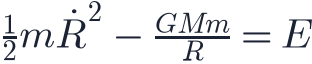 Substitute and 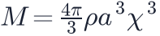 , then divide by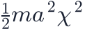 :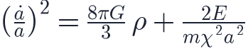 The last term is a constant divided by 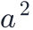 . Writing that constant as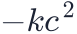 gives the Friedmann equation: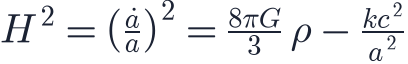 |
The first Friedmann equation The expansion rate squared is set by the density of the universe and by a
constant . In general relativity, 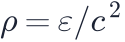 ), and describes the curvature of space (lesson L2.5). |
Three possible fates (for matter only)
The energy , and therefore , decides the future, just like a ball thrown upward from the Earth:
| Energy | Curvature | Behaviour |
|---|---|---|
| (open) | Expands forever, like a ball faster than escape velocity | |
| (flat) | Expands forever, just barely, slowing towards zero speed | |
| (closed) | Expansion stops and reverses: a Big Crunch |
This neat correspondence between geometry and fate holds when the universe contains only matter. Dark energy breaks it, as we will see in Level 3.
The acceleration equation
Differentiating, or applying Newton's second law to the galaxy directly, gives
how the expansion speeds up or slows down. General relativity adds one important
ingredient: pressure  also gravitates.
also gravitates.
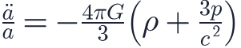
For ordinary matter and radiation,  and
and  are positive, so :
gravity decelerates the expansion. A substance with strongly negative
pressure, , makes : accelerated expansion. Keep
this in mind for dark energy.
are positive, so :
gravity decelerates the expansion. A substance with strongly negative
pressure, , makes : accelerated expansion. Keep
this in mind for dark energy.
The fluid equation
As the universe expands, the density changes. The first law of thermodynamics applied to an expanding volume gives
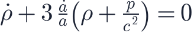
For pressureless matter (
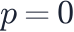
) this means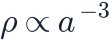
: the same mass spread over a volume that grows as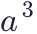
. Together, the Friedmann, acceleration and fluid equations determineExample: the Einstein–de Sitter universe
Consider a flat universe () containing only matter,
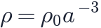
. The Friedmann equation becomes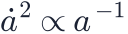
, which is solved by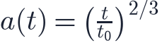
Then , so the age of this universe is
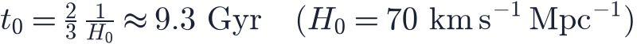
The age problem 9.3 billion years is younger than the oldest stars, which are about 12–13 billion years old. This "age problem" was one of the hints, before 1998, that the matter-only model could not be the whole story. |
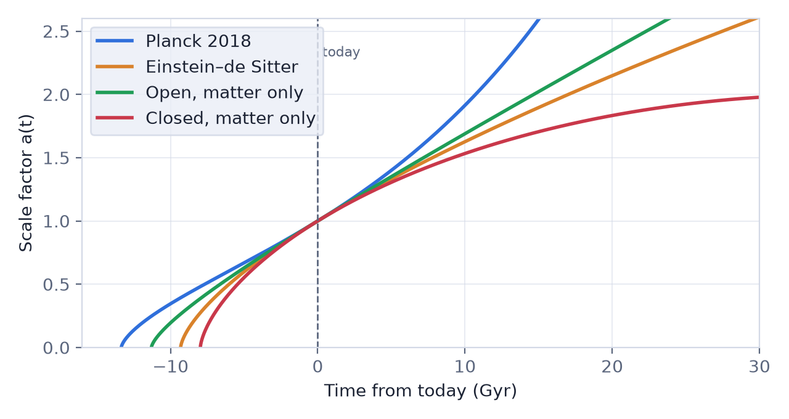
The figure shows  for several models, all passing through
for several models, all passing through  today
with the same
today
with the same  (the same slope at
(the same slope at
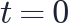
). Their pasts and futures differ dramatically.Try it: Expansion History Explorer Change the matter and dark energy content and watch a(t) and the fate of the universe change. |
Remember this
|